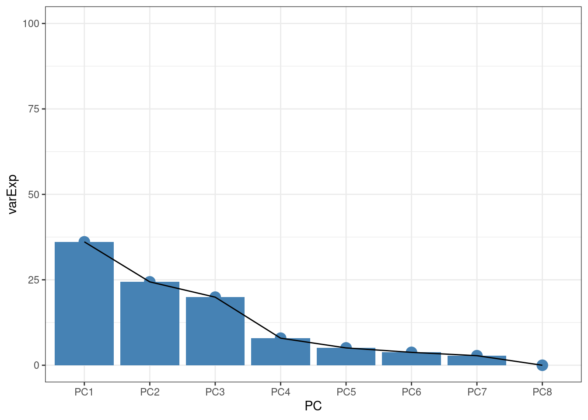
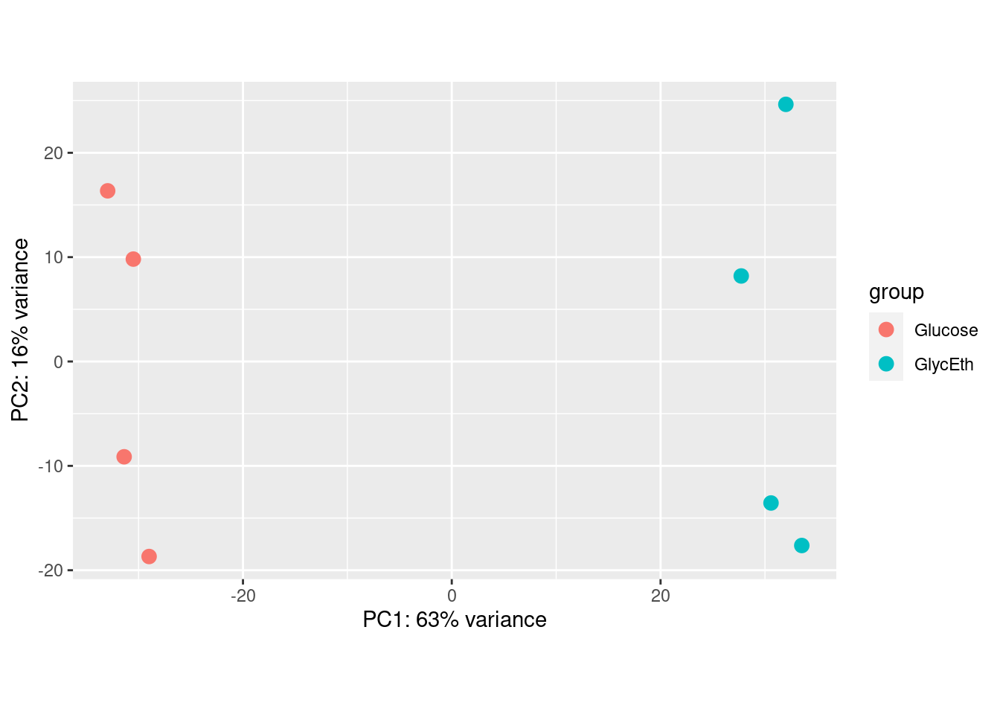
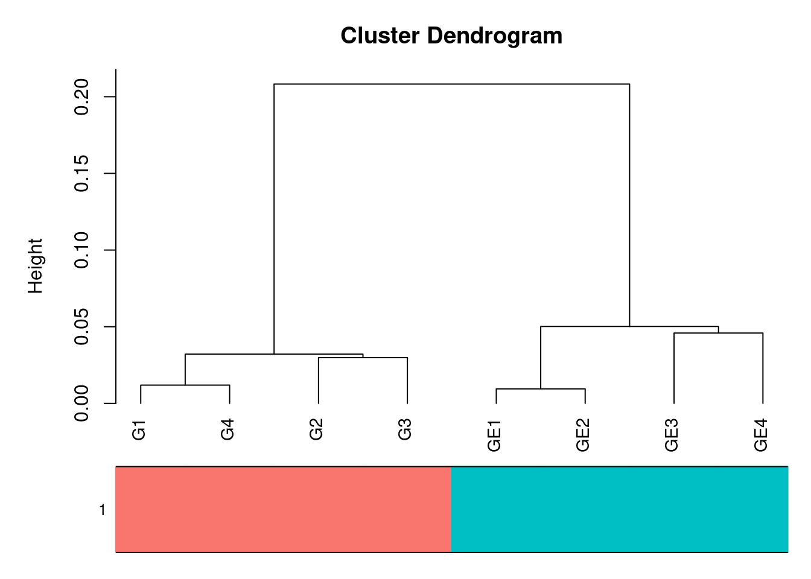
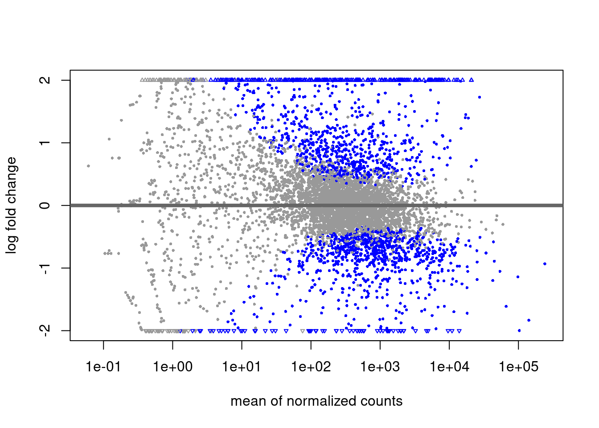
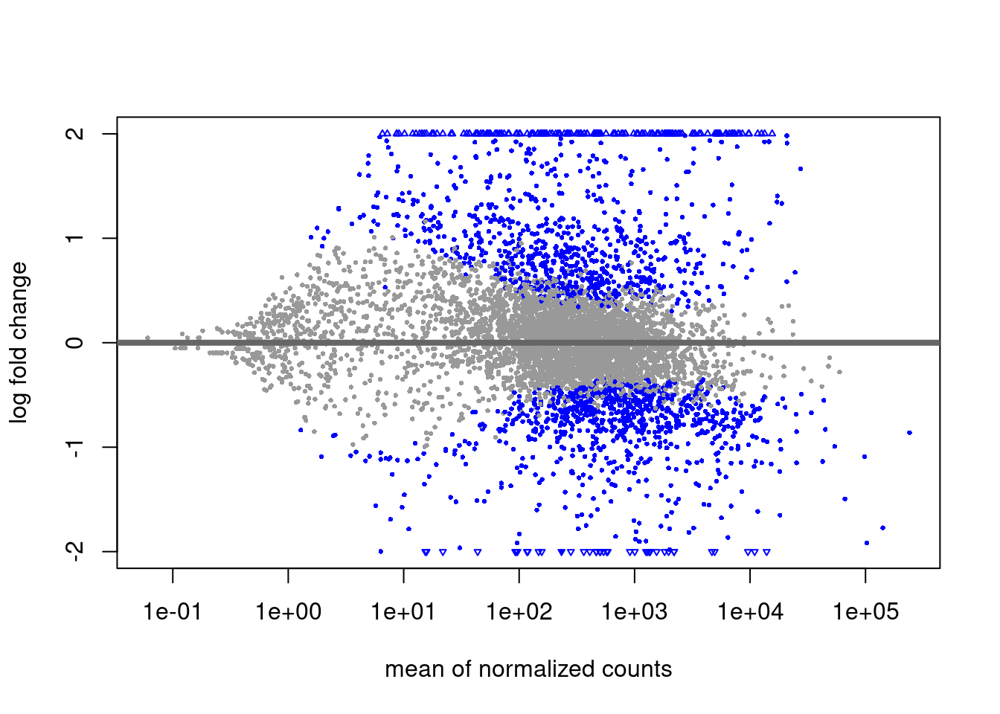

suppressPackageStartupMessages({
library(SummarizedExperiment)
library(pheatmap)
library(RColorBrewer)
library(stringr)
library(plotly)
library(tidyverse)
library(tximport)
library(DESeq2)
})
source("../helpers.R")Differential Expression Analysis
In this section, we will use the count data from Kallisto from the previous part, redo some of the QC, and perform the differential expression analysis using DESeq2(Love, Huber, and Anders 2014). This part is adapted from the official DESeq2 vignette, available on Bioconductor, so feel free to look there for additional information.
Preparing data
Let’s download data. These counts should be mostly identical to the results we produced ourselves in the last step but are provided here as a download for convenience.
CURR_DIR=$(pwd)
cd ../..
# Download the data
KALLISTO_OUTDIR=results/3_quant/kallisto
mkdir -p $KALLISTO_OUTDIR
# change to kallisto dir and delete contents if there are any
cd $KALLISTO_OUTDIR
rm -f ./*
# Download data
echo "Depositing data in "$KALLISTO_OUTDIR
curl -O https://fgcz-gstore.uzh.ch/public/RNASeqCourse/processed_yeast_kallisto_counts.tar
# Extract data
tar -xvf processed_yeast_kallisto_counts.tar
rm -f processed_yeast_kallisto_counts.tar
# Back home
cd $CURR_DIRDepositing data in results/3_quant/kallisto
% Total % Received % Xferd Average Speed Time Time Time Current
Dload Upload Total Spent Left Speed
0 0 0 0 0 0 0 0 --:--:-- --:--:-- --:--:-- 0
100 4760k 100 4760k 0 0 39.3M 0 --:--:-- --:--:-- --:--:-- 39.3M
G1.h5
G1.json
G1.txt
G2.h5
G2.json
G2.txt
G3.h5
G3.json
G3.txt
G4.h5
G4.json
G4.txt
GE1.h5
GE1.json
GE1.txt
GE2.h5
GE2.json
GE2.txt
GE3.h5
GE3.json
GE3.txt
GE4.h5
GE4.json
GE4.txtFirst, let’s create our meta-information frame and instantiate some variables we will use later.
# Define meta dataframe for later use
meta <- data.frame(
Condition=as.factor(rep(c("Glucose", "GlycEth"), each=4)),
row.names=c(paste0("G", 1:4), paste0("GE", 1:4))
)
conditionColours <- scales::hue_pal()(length(unique(meta$Condition)))
names(conditionColours) <- unique(meta$Condition)
sampleColours <- conditionColours[meta$Condition]
On
Condition factor levels
R will choose a reference level for factors based on alphabetical order. Then, once we do the differential expression with DESeq2, you will never tell the DESeq2 functions which level you want to compare against (e.g. which level represents the control group), the comparisons will be based on the alphabetical order of the levels. There are two solutions: you can either explicitly tell results which comparison to make using the contrast argument (this will be shown later), or you can explicitly set the factors levels. In order to see the change of reference levels reflected in the results names, you need to either run DESeq or nbinomWaldTest/nbinomLRT after the re-leveling operation.
In our case, we are lucky in that the Glucose group comes before GlycEth alphabetically and is therefore already set as the reference, and subsequently is the first term when you run levels(meta$Condition). Try it out for yourself.
Again, load the by-transcript gtf file to aid us in the annotation of our Kallisto results.
# Load the annotation
seqAnno <- getFeatureAnnotation("../../data/supplementary-files/Ensembl_R64_genes/genes_annotation_byTranscript.txt", dataFeatureType="transcript")Loading required package: data.table
Attaching package: 'data.table'The following objects are masked from 'package:dplyr':
between, first, lastThe following object is masked from 'package:purrr':
transposeThe following object is masked from 'package:SummarizedExperiment':
shiftThe following object is masked from 'package:GenomicRanges':
shiftThe following object is masked from 'package:IRanges':
shiftThe following objects are masked from 'package:S4Vectors':
first, secondLoading required package: rtracklayerseqAnno <- seqAnno[seqAnno$type %in% "protein_coding", ]Next, we load the counts using tximport , a convenience function for loading in count data from a variety of sources (Salmon, Kallisto, featureCounts, etc.) which also performs the aggregation of transcript counts to the gene level (remember that Kallisto produced count files on the transcript level).
# Get the files
kallistoFiles <- file.path("../../results/3_quant/kallisto", paste0(rownames(meta), ".txt"))
names(kallistoFiles) <- rownames(meta)
stopifnot(all(file.exists(kallistoFiles))) # Ensure we have all the files
kallistoFiles G1
"../../results/3_quant/kallisto/G1.txt"
G2
"../../results/3_quant/kallisto/G2.txt"
G3
"../../results/3_quant/kallisto/G3.txt"
G4
"../../results/3_quant/kallisto/G4.txt"
GE1
"../../results/3_quant/kallisto/GE1.txt"
GE2
"../../results/3_quant/kallisto/GE2.txt"
GE3
"../../results/3_quant/kallisto/GE3.txt"
GE4
"../../results/3_quant/kallisto/GE4.txt" # Use tximport to load the counts
txiKallisto <- tximport(kallistoFiles, type = "kallisto", tx2gene = seqAnno, ignoreAfterBar = TRUE, txIdCol = "transcript_id", geneIdCol = "gene_id")Note: importing `abundance.h5` is typically faster than `abundance.tsv`reading in files with read_tsv1 2 3 4 5 6 7 8
summarizing abundance
summarizing counts
summarizing lengthTake a quick look at the txiKallisto object we generated and take a look at the rownames. Contrast this to the rownames in the raw files.
# Your code heretxiKallisto is a simple list with matrices, "abundance", "counts", and "length", where the transcript level information is summarized to the gene-level. Typically, abundance is provided by the quantification tools as TPM (transcripts-per-million), while the counts are estimated counts (possibly fractional), and the "length" matrix contains the effective gene lengths.
Finally, let’s construct a DESeqDataSet from the txi object and sample information in meta
dds <- DESeq2::DESeqDataSetFromTximport(txiKallisto,
colData=meta,
design=~Condition)using counts and average transcript lengths from tximportddsclass: DESeqDataSet
dim: 6600 8
metadata(1): version
assays(2): counts avgTxLength
rownames(6600): Q0010 Q0017 ... YPR204C-A YPR204W
rowData names(0):
colnames(8): G1 G2 ... GE3 GE4
colData names(1): ConditionKallisto QC
Let’s first perform a QC step for these counts, to ensure they match up with the feature counts we attained in the last exercise.
sigThresh <- 10
isPresent <- counts(dds) > sigThresh
isPresentCond <- rowsum(t(isPresent * 1), group=meta$Condition)
isPresentCond <- t(sweep(isPresentCond, 1,
table(meta$Condition)[rownames(isPresentCond)], FUN="/")) >= 0.5
isValid <- rowMeans(isPresentCond) >= 0.5
vsdQC <- DESeq2::vst(dds[isValid,])using 'avgTxLength' from assays(dds), correcting for library size# Extract normalized counts
vsdSE <- SummarizedExperiment::assay(vsdQC)PCA
# Run PCA
pcDat <- prcomp(t(vsdSE), scale. = FALSE)
# Calculate explained variance
varExp <- (100*pcDat$sdev^2)/sum(pcDat$sdev^2)
# Store the explained variance of top 8 PCs
varExp_df <- data.frame(PC= paste0("PC",1:8),
varExp=varExp[1:8])
# Scree plot
varExp_df %>%
ggplot(aes(x=PC,y=varExp, group=1)) +
geom_point(colour="steelblue", size=4) +
geom_col(fill="steelblue") +
geom_line() +
theme_bw() + ylim(c(0,100))
plotPCA(vsdQC, intgroup=c("Condition"), ntop=nrow(vsdQC))
MDS
mds <- limma::plotMDS(vsdSE, plot=FALSE)
mdsOut <- mds$eigen.vectors[,1:3]
colnames(mdsOut) <- c("Leading logFC dim1", "Leading logFC dim2",
"Leading logFC dim3")
toPlot <- cbind(meta %>% rownames_to_column("Sample"), mdsOut)
plot_ly(toPlot, x=~`Leading logFC dim1`, y=~`Leading logFC dim2`, z=~`Leading logFC dim3`, color=~Condition, colors="Set1", type='scatter3d', mode='markers+text', text=~Sample, textposition = "top right") %>%
plotly::layout(title="Classical MDS", scene=list(xaxis=list(title = 'Leading logFC dim1'), yaxis = list(title = 'Leading logFC dim2'), zaxis = list(title = 'Leading logFC dim3')))Hierarchical Clustering Plot
d <- as.dist(1-cor(vsdSE, use="complete.obs"))
hc <- hclust(d, method="ward.D2")
WGCNA::plotDendroAndColors(hc, sampleColours, autoColorHeight=TRUE, hang = -0.1)
Exercise #1
Take a look back at the rendered html from the previous exercise. Do the results look similar?
Plot the top 2’000 most variable genes in a heatmap.
# Your code here
Solutions
Yes, beyond some minor differences, the results look similar.
The easy solution is to simply copy the code from the previous exercise here:
# First, we center the matrix normCountsCentered <- sweep(normCounts, 1, rowMeans(normCounts)) # Identify high variance features topGenes <- rownames(normCounts)[head(order(rowSds(normCounts, na.rm=TRUE), decreasing = TRUE), 2000)] countsToPlot <- normCountsCentered[topGenes,] # Clustering of high variance features hmObj <- pheatmap(countsToPlot, clustering_method="ward.D2", scale = "row", cluster_rows = TRUE, cluster_cols = TRUE, show_rownames = FALSE, cutree_rows = 6, cutree_cols = 2, treeheight_row = 50, treeheight_col = 50, annotation_col = meta, fontsize_row = 8, fontsize_col = 9, annotation_legend = TRUE, fontsize=8) hmObj
Performing the DE
The standard differential expression analysis steps are wrapped into a single function, DESeq. The estimation steps performed by this function are described below, in the manual page for ?DESeq .
# Calculate size factors
dds <- estimateSizeFactors(dds, controlGenes = isValid)using 'avgTxLength' from assays(dds), correcting for library sizesf <- 1 / dds@colData$sizeFactor
# Calculate DESeq
dds <- DESeq(dds)using pre-existing normalization factorsestimating dispersionsgene-wise dispersion estimatesmean-dispersion relationshipfinal dispersion estimatesfitting model and testingres <- results(dds)
reslog2 fold change (MLE): Condition GlycEth vs Glucose
Wald test p-value: Condition GlycEth vs Glucose
DataFrame with 6600 rows and 6 columns
baseMean log2FoldChange lfcSE stat pvalue padj
<numeric> <numeric> <numeric> <numeric> <numeric> <numeric>
Q0010 0.133925 0.75709 3.524951 0.21478 8.29939e-01 NA
Q0017 0.000000 NA NA NA NA NA
Q0032 0.000000 NA NA NA NA NA
Q0045 17.543419 3.23652 0.714457 4.53003 5.89741e-06 6.29461e-05
Q0050 48.426998 3.39134 0.441980 7.67306 1.67941e-14 5.11523e-13
... ... ... ... ... ... ...
YPR201W 28.24256 1.008524 0.505255 1.996067 4.59266e-02 1.39954e-01
YPR202W 42.04438 0.892940 0.517929 1.724061 8.46969e-02 2.20445e-01
YPR203W 31.35051 -1.030423 0.624919 -1.648889 9.91703e-02 2.47837e-01
YPR204C-A 2.53859 -0.773100 1.337551 -0.577997 5.63266e-01 7.61032e-01
YPR204W 986.30147 0.886455 0.170717 5.192551 2.07432e-07 2.97066e-06You may wonder why we designated all genes above threshold as being “control genes” when calculating the size factors. Though this list of course also includes genes which will presumably be differentially expressed between the two conditions, the majority of genes will not be, and this therefore serves as a good approximation of the control genes in cases where we do not have this information a priori.
Results tables are generated using the function results, which extracts a results table with log2 fold changes, p-values and adjusted p-values. With no additional arguments to results, the log2 fold change and Wald test p-value will be for the last variable in the design formula, and if this is a factor, the comparison will be the last level of this variable over the reference level (see previous note on factor levels).
Next, let’s take a closer look at the results.
Exercise #2
- What are the columns of the object?
- What was the method used for p-value correction?
- How many significantly-expressed genes are there assuming we consider genes differentially expressed if
p <= 0.01andlog2FoldChange >= 0.5?
Solutions
The columns most interesting to us are pvalue, padj (adjusted p-value), and log2FoldChange. Some other columns include
lfcSE, which gives the standard error of thelog2FoldChangeandstat, which gives the Wald statistic. See ?results for more information.BH (Benjamin-Hochberg)
Execute the following:
sum(abs(res$log2FoldChange) >= 0.5 & res$pvalue <= 0.01)[1] NA
Exploring and Visualizing Results
Let’s first summarise the results table we get.
summary(res)
out of 6369 with nonzero total read count
adjusted p-value < 0.1
LFC > 0 (up) : 948, 15%
LFC < 0 (down) : 902, 14%
outliers [1] : 1, 0.016%
low counts [2] : 124, 1.9%
(mean count < 0)
[1] see 'cooksCutoff' argument of ?results
[2] see 'independentFiltering' argument of ?resultsYou will notice that there are no low-count genes in the result since we filtered them all out prior to performing the DE.
The results function contains a number of arguments to customize the results table which is generated. You can read about these arguments by looking up ?results. Note that the results function automatically performs independent filtering based on the mean of normalized counts for each gene, optimizing the number of genes which will have an adjusted p-value below a given FDR cutoff, alpha. All genes which do not pass the threshold are set to NA.
res05 <- results(dds, alpha=0.05)
summary(res05)
out of 6369 with nonzero total read count
adjusted p-value < 0.05
LFC > 0 (up) : 798, 13%
LFC < 0 (down) : 731, 11%
outliers [1] : 1, 0.016%
low counts [2] : 0, 0%
(mean count < 0)
[1] see 'cooksCutoff' argument of ?results
[2] see 'independentFiltering' argument of ?resultsDESeq2 includes a number of convenience methods for visualizing results. The function plotMA shows the log2 fold changes attributable to a given variable over the mean of normalized counts for all the samples in the DESeqDataSet. Points will be colored red if the adjusted p value is less than 0.1 (the default alpha value).
plotMA(res, ylim=c(-2,2))
It is more useful visualize the MA-plot for the shrunken log2 fold changes, which remove the noise associated with log2 fold changes from low count genes without requiring arbitrary filtering thresholds.
resultsName <- resultsNames(dds)[-1]
resultsName # Get the contrast[1] "Condition_GlycEth_vs_Glucose"resLFC <- lfcShrink(dds, coef=resultsName, type="normal")using 'normal' for LFC shrinkage, the Normal prior from Love et al (2014).
Note that type='apeglm' and type='ashr' have shown to have less bias than type='normal'.
See ?lfcShrink for more details on shrinkage type, and the DESeq2 vignette.
Reference: https://doi.org/10.1093/bioinformatics/bty895plotMA(resLFC, ylim=c(-2,2))
Volcano Plot
Let’s next visualise the data in a volcano plot. This type of plot summarises the the p-values against log-fold changes as a scatterplot, resulting in a figure resembling a volcano. We will use the packaged EnhancedVolcano (Blighe, Rana, and Lewis 2022) since it works well out of the box.
EnhancedVolcano::EnhancedVolcano(resLFC,
lab=rownames(res),
x = 'log2FoldChange', y = 'pvalue')
Take a look at the output. Each spot in the scatter plot represents a gene with its corresponding position on the plot determined by the p-value and log-fold change. It additionally plots threshold lines and colors the genes based on which areas of the volcano plot the genes fall. Everything in the red areas passes both the log-fold and p-value thresholds. It additionally plots the names of some of the top genes.
However, due to the large effect size for some genes, it becomes difficult to see genes closer to the threshold lines. In addition, we would ultimately like to see gene names instead of gene IDs. To this end, let’s set a maximum x- and y-axis value for our plot and swap the gene IDs out for the gene names.
ymax <- 100
xmax <- 4
seqAnnoMinimal <- seqAnno %>%
select(gene_id, gene_name, transcript_id)
rownames(seqAnnoMinimal) <- seqAnnoMinimal$gene_id
seqAnnoMinimal <- seqAnnoMinimal[rownames(resLFC),]
# Set up the object to plot
toPlot <- res %>%
as.data.frame() %>%
rownames_to_column("gene_id") %>%
mutate(pvalue=pmax(pvalue, 1/(10^ymax)),
log2FoldChange=ifelse(log2FoldChange < 0,
pmax(log2FoldChange, -xmax),
pmin(log2FoldChange, xmax))) %>%
merge.data.frame(., seqAnnoMinimal, by='gene_id', all = TRUE)
# Plot the EnhancedVolcano
EnhancedVolcano::EnhancedVolcano(toPlot,
lab = toPlot$gene_name,
selectLab = c("SEC72", "MRPL23", "ARG7", "ADY2", "CDC40", "CTI6", "SNF8", "SPA2"),
drawConnectors = TRUE,
arrowheads = FALSE,
xlim = c(-xmax, xmax),
ylim = c(0, ymax),
boxedLabels = TRUE,
parseLabels = TRUE,
x = 'log2FoldChange',
y = 'pvalue')
Exercise #3
- In this particular experiment, we are interested to see how feeding yeast a diet of glucose versus a diet of glucose and ethanol affects the cells. To this end, the yeast-biologist who performed this experiment was able to provide us with a number of genes involved in glucose transport which they expect to be down-regulated in the Glucose+Ethanol condition relative to the glucose condition. The genes in question are HXT1, HXT4, and HXT11. Modify the above code so that it displays these genes. Was the biologist correct in their assumptions? Would these results be affected much by changing thresholds?
Solutions
Put the gene names in question to the “selectLab” argument and re-run that line.
EnhancedVolcano::EnhancedVolcano(toPlot, lab = toPlot$gene_name, selectLab = c("HXT1", "HXT4", "HXT11"), drawConnectors = TRUE, arrowheads = FALSE, xlim = c(-xmax, xmax), ylim = c(0, ymax), boxedLabels = TRUE, parseLabels = TRUE, x = 'log2FoldChange', y = 'pvalue') + coord_flip()Coordinate system already present. Adding new coordinate system, which will replace the existing one.
Two of the three genes are extremely down-regulated in the Glucose+Ethanol condition relative to Glucose. We don’t expect changing the thresholds to have much affect on this.
References
Blighe, Kevin, Sharmila Rana, and Myles Lewis. 2022. “EnhancedVolcano: Publication-Ready Volcano Plots with Enhanced Colouring and Labeling.” https://github.com/kevinblighe/EnhancedVolcano.
Love, Michael I., Wolfgang Huber, and Simon Anders. 2014. “Moderated Estimation of Fold Change and Dispersion for RNA-Seq Data with DESeq2” 15: 550. https://doi.org/10.1186/s13059-014-0550-8.